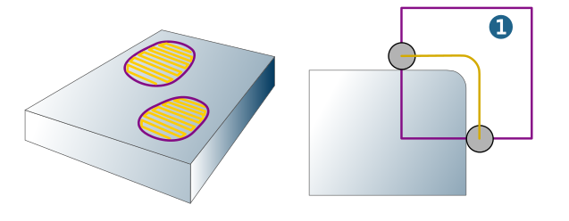
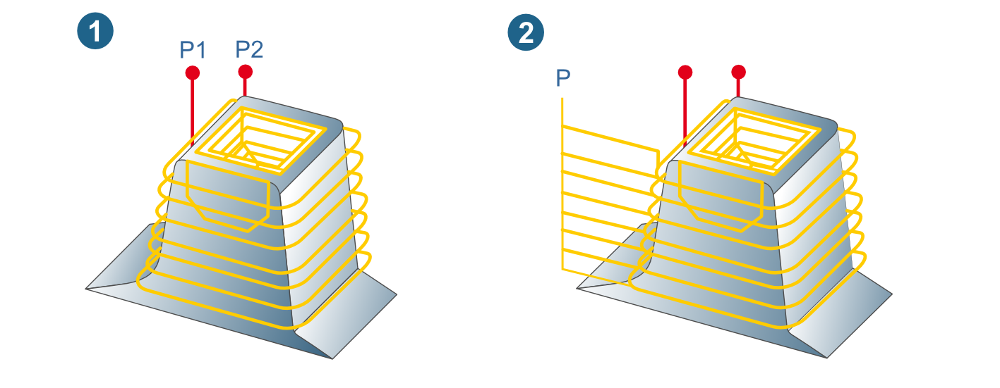
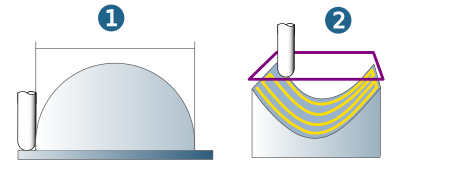
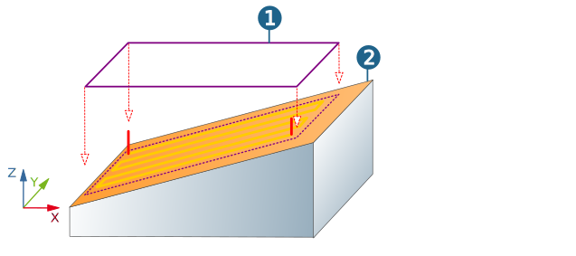

Boundary
Strategy
Limit the machining area either with a Boundary curve or using Milling surfaces.
Boundary curve
If no boundary is defined, the outside contours of the model are used as the machining boundaries. One or more boundaries are permissible, and they may overlap for the purpose of area delimitation; however, they may not be nested several times. The boundary curve (1) is valid for the axis position of the tool.
|  |
Plunge point (1): Enable to define the XY coordinates at which the infeed in Z takes place onto the next finishing level. If the option is not enabled, hyperMILL automatically looks for the point with the greatest milling depth (2) and uses the corresponding XY coordinates for the plunge point (P). If this results in areas that cannot be reached from a plunge point, the system automatically defines several plunge points.
|  |
Only one plunge point can be defined manually for each cycle. All areas to be machined within the cycle must be approachable from this point. Areas, which are invisible for the tool axis, cannot be machined. The plunge point must be situated at the place with the greatest bottom stock value.
Tool reference
During some machining cycle a definition of the traverse area in dependence on the boundary curve is possible. The following options are available, depending on the cycle:
To (1): The milling path ends as soon as there is contact between the tool shank and the boundary. This ensures that already machined surfaces lying outside the boundary are not touched. Machining with exact boundary. This may result in unmachined areas.
On (2): Machining of the defined area until the tool axis is on top of the boundary. The tool axis can never move beyond the boundary.
Offset: Any given offset value can be chosen. A positive value enlarges the boundary, while a negative value reduces it. With nested boundaries, a positive offset value enlarges the outer boundaries and reduces the inner boundaries (vice versa with negative offsets). An offset of 0 corresponds to the On mode.
The offset option is suitable for pre-machining with rough boundary. Here too, unmachined areas may result.
Past (3): The tool axis leaves the boundary. The milling path ends as soon as there is no longer contact between the tool shaft and the boundary. For machining with an exact boundary. Without neighboring surfaces there is a danger of “nose-diving". This is advantageous when machining raised surface areas. Complete machining of border areas. No ‘nose-diving’ of the cutter in the border area for cavities (3).
 |
This is advantageous when machining raised surface areas (1). Complete machining of the border areas takes place.
No ‘nose-diving’ of the cutter in the border area for cavities (2).
|  |
Contact: The milling path ends as soon as there is no longer contact between the tool geometry and the surface limited by the boundary. This ensures complete machining of the surface. Depending on the slope angle of the surface, the boundary may be crossed. Without neighboring surfaces there is a danger of “nose-diving".
Stop surfaces
|
Use stop surfaces to define the area of the CAD model on which no machining takes place. Always use stop surfaces whenever you need to ensure that the tool does not touch the stop surfaces. |

Offset: The offset of the stop surfaces extends the area excluded from machining by the specified value. Valid in X, Y and Z direction.
Additional horizontal offset: Extends the area excluded from machining in X, Y direction.
Trim to stock
Trim to stock: Enable to use the stock to trim the toolpaths. A defined Offset value is taken into account.
Milling surfaces
Use milling surfaces to define the area to be machined.
|
Manual boundaries: The milling surfaces can be delimited with one or more manual boundaries. The boundaries must be located on the milling surfaces. When this strategy is used, the edge behavior of the tool is the same as with On mode with regard to the surface normals on the boundary. |

When machining takes place with the Soft bounding function, (only when using ball mills), the Manual boundary (1) must not be on the Milling surfaces (2). It can be placed anywhere and is projected onto the milling surfaces. Areas are processed in which the point of contact between tool and surface is within the boundary, from the point of view of the frame.
|  |
Stop surfaces
|
Use stop surfaces to define the area of the CAD model on which no machining takes place. Always use stop surfaces whenever you need to ensure that the tool does not touch the stop surfaces. |
Use all other surfaces: All (other) surfaces of the component that are not used for milling are automatically defined as stop surfaces excluded from machining.
Manual selection: Manual definition of stop surfaces to be excluded from machining.
Offset: The offset of the stop surfaces extends the area excluded from machining by the specified value. Valid in X, Y and Z direction.
Trim to stock
Trim to stock: Enable to use the stock to trim the toolpaths. A defined Offset value is taken into account.